Tic Tac Toe は2人で遊ぶゲームで、3x3の格子状の升目に2人のプレーヤーが交互に石を置き、自分の石が縦、横、または斜めに3つ並んだら勝ち、3つ並ばずに全ての升目が埋まったら引き分けとなるゲームです。
このチュートリアルでは、コンピュータを相手に遊ぶ Tic Tac Toe ゲームの仕様を使ってゲームの UI プロトタイプを Lively Walk-Through 上に作成することを通して、Lively Walk-through の使い方を学びます。
ViennaTalkを ViennaTalk リリースページから入手してください。
このチュートリアルには以下のファイルが必要です。 このチュートリアルのResourcesディレクトリから入手してください。
まず、ViennaTalkを起動してください。
MacならばViennaTalkアイコンをダブルクリック、Windowsならば ViennaTalk\pharo.exe、Linuxならば ViennaTalk/pharo を実行してください。
続いて、ViennaTalk Launcher の Toolsメニューから、「Lively Walk-Through」を開きます。
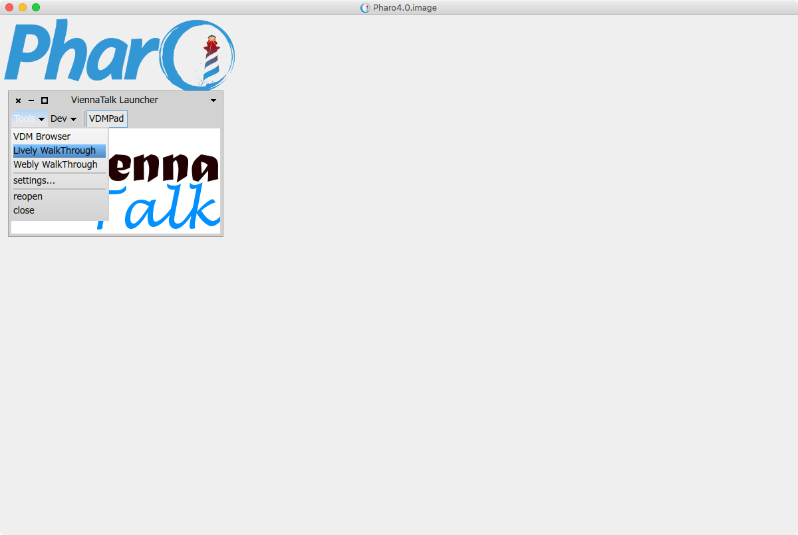

これで Lively Walk-Through が起動しました。 これから Lively Walk-Through 上に Tic-Tac-Toe ゲームのUI プロトタイプを作成します。
Tic Tac ToeゲームのVDM-SL仕様を Lively Walk-Through に読み込みます。
Lively Walk-Throughの上部右側のタブから「VDM Browser」を選択してください。

上段左側の「DEFAULT」と書いてあるリスト上で右クリックして、「New and load...」を選んでください。

ファイルを選択するダイアログが開くので、TicTacToe.vdmsl を選んでください。

Tic Tac Toe ゲームの VDM-SL 仕様が読み込まれました。
この仕様が定義しているAPIのうち、このUIプロトタイプでは
の2つの操作を使います。
get操作は引数で指定された升目の石を返します。ユーザが置いた石があれば<O>、コンピュータが置いた石があrば<X>、石がなければnilを返します。
play操作は引数で指定された升目にユーザの石を置きます。返り値はゲームの状態を表しますが、このUIプロトタイプではその内容にあまり意味はありません。
Tic Tac Toeで遊ぶためのUIプロトタイプを作成します。
まずは盤面の画像を配置します。 Lively Walk-Throughの上部右側のタブからWidgetsを選択してウィジェットパレットからImageウィジェットをドラッグして左側のプロトタイプスペースに置いてください。


Imageウィジェットに盤面の画像ファイル(board.png)を表示するよう設定します。 プロトタイプスペースのImageウィジェット上で右クリックでメニューを出し、「change image...」を選択してください。

ファイルダイアログが開きます。 board.png を選択してください。
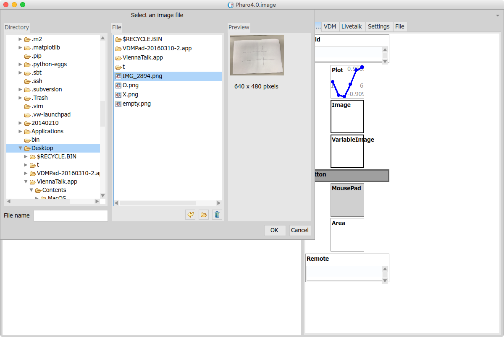
するとImageウィジェットに盤面画像が表示されます。
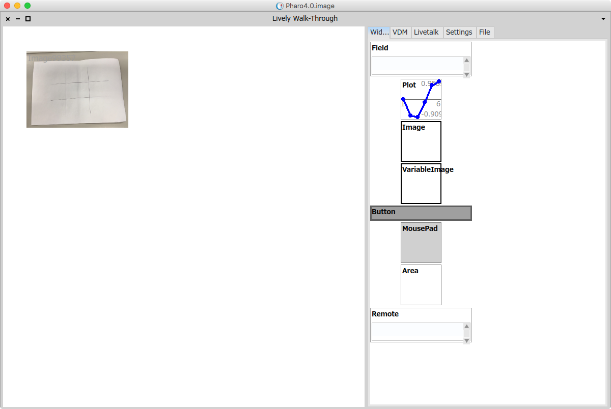
十分に大きなサイズになるよう、画像の右下をドラッグして調整してください。

これで Tic Tac Toeを遊ぶための盤面の画像を配置できました。
ゲーム画面として、石を表示するための仕組みを作ります。
Lively Walk-ThroughにはVariableImageウィジェットがあります。 VariableImageウィジェットは、保持する値に応じて表示する画像をあらかじめ定義することで、保持する値をグラフィカルに表現するためのウィジェットです。 Tic Tac Toe の仕様では、get操作を呼び出すと、引数で指定された位置の升目の値として「○」が置かれていたら <O>、「×」が置かれていたら <X>、何も置かれていなければ nil が得られます。 VariableImageウィジェットにそれら3つの値に対応する画像を指定しておいて、get操作の結果をVariableImageウィジェットに渡すことで、Tic Tac Toe の盤面を更新することができます。
まずは 3x3 の升目のうち左上の升目を作ります。
Lively Walk-Through の右側のウィジェットパレットからVariableImageウィジェットを盤面の左上に配置します。


置いたVariableImageウィジェットは左上の升目を表します。 名前を C11 に変更します。 置いたVariableImageウィジェット上で右クリックメニューから change nameを選択してください。
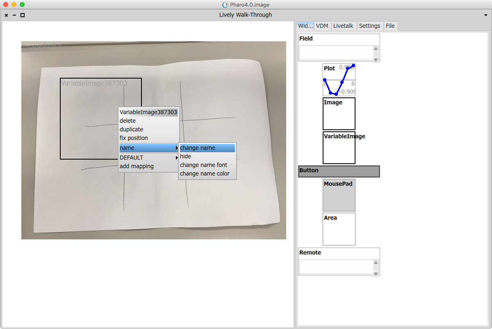
そして、ウィジェット名として「C11」と入力してください。

次に、升目の状態ごとに表示する画像を設定します。 まずは、「<O>」に対応する画像として、images/O.pngを指定します。 右クリックメニューで、「add mapping」を選択してください。

対応させる値を指定します。「<O>」と入力してください。
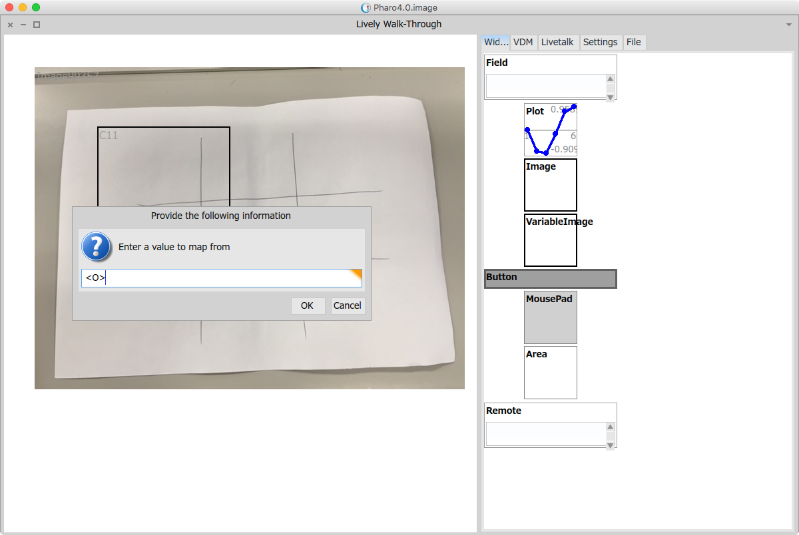
次に、「<O>」に対応させる画像を指定します。ファイルダイアログが開くので、このチュートリアルに同梱されている images/O.png を指定してください。

同様にして、「<X>」に images/X.png を対応させてください。
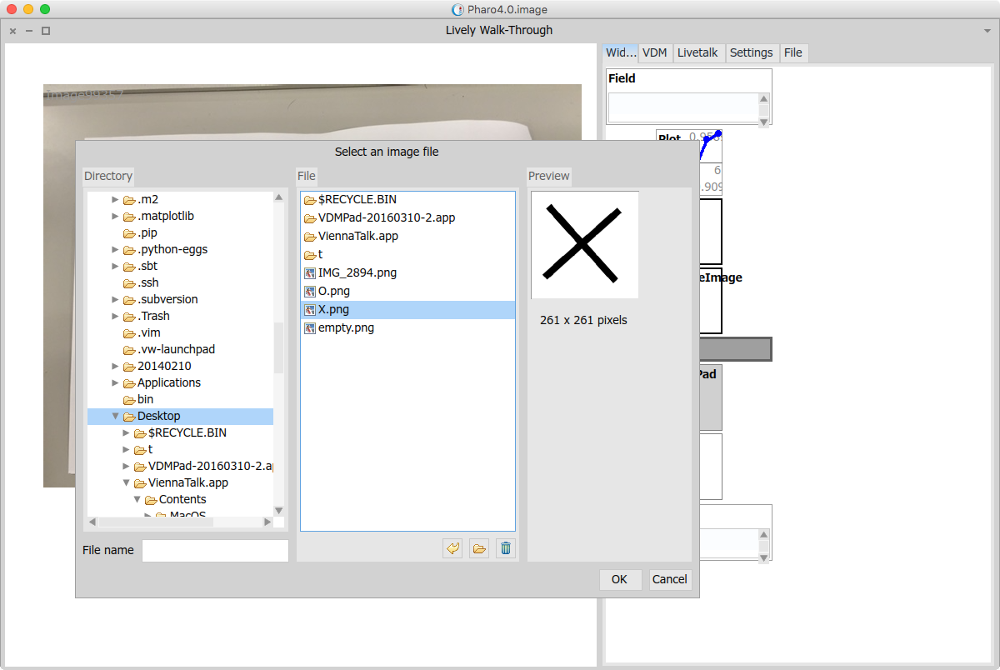
最後に、デフォルトの画像として、 images/empty.png を指定してください。
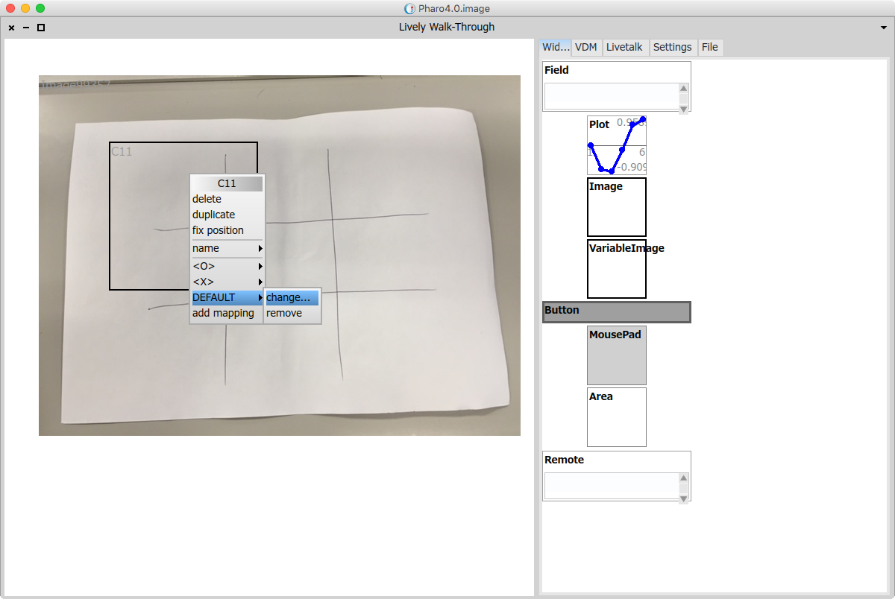
升目を表すウィジェットの大きさを盤面の画像での升目にあうように大きさや位置を調整してください。 これで左上の升目を表すウィジェットの設定ができました。
画面を更新する仕組みを作ります。
Lively Walk-Throughでは、VDM-SL仕様と画面を連動させる仕組みとして、LiveTalkというミニ言語を使います。 LiveTalkでは、ウィジェットに発生したイベントに対するアクションを定義します。 イベントには、「clicked」のように直接ユーザの操作によって発生するイベントと、 「assigned」のようにウィジェットに対する操作によっても発生するイベントがあります。 今回は升目を表すウィジェットの「clicked」イベントを使ってプレーヤーが入力した「手」をVDM-SL仕様に伝え、 入力フィールドウィジェットの「assigned」イベントを使って画面を更新する仕組みをLiveTalkを使って記述します。
まずは、「assigned」イベントを使って画面を更新する仕組みを記述します。 ウィジェットパレットからFieldウィジェットをドラッグして、左側の盤面外のどこかに配置してください。


Fieldウィジェットのウィジェット名を「Status」に設定します。 配置したFieldウィジェットの右クリックメニューで「change name」を選んでください。
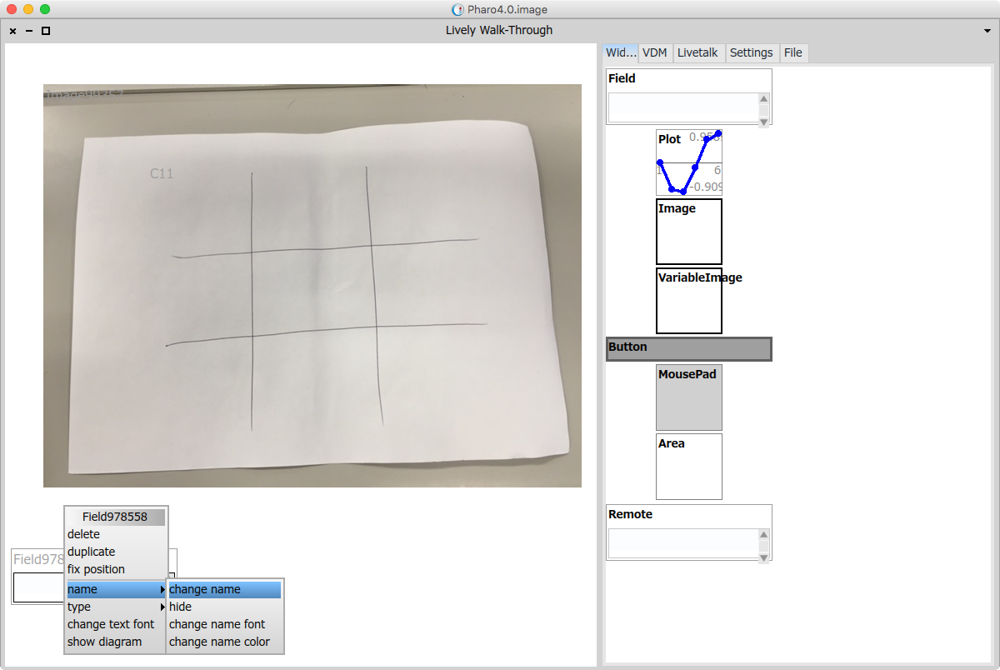
ウィジェット名として「Status」と入力してください。
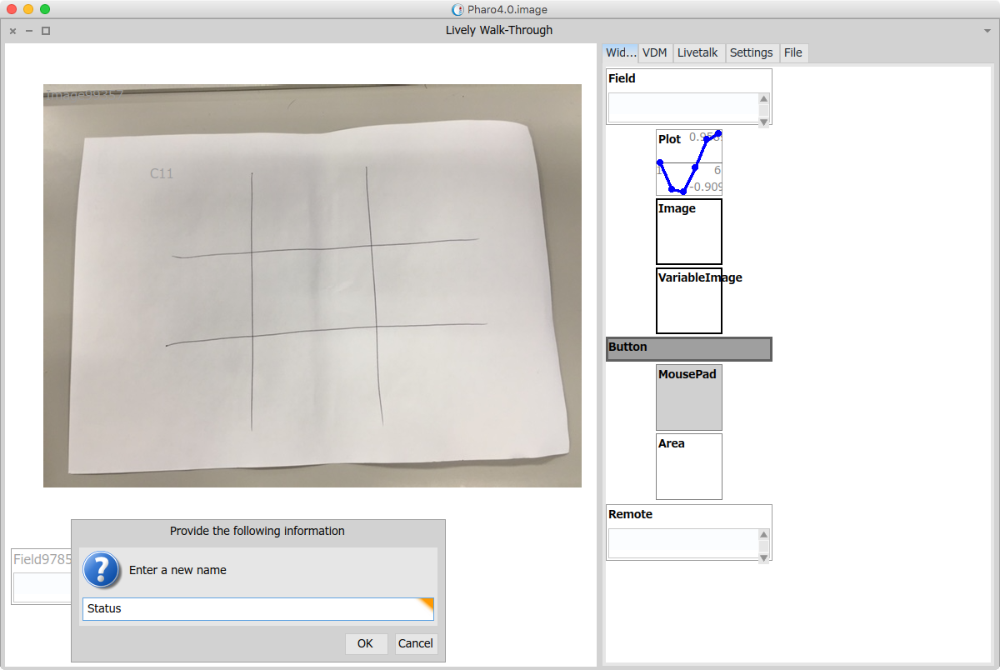
この「Status」ウィジェットの「assigned」イベントに対するアクションを定義します。 画面上端右のタブから「LiveTalk」をクリックしてください。 すると、ウィンドウの右半分がウィジェットパレットからLiveTalkブラウザに切り替わります。

「Status」ウィジェットのassignedイベントに対するアクションとして、VDM-SL仕様のget(1,1)を呼び出して、結果を「C11」ウィジェットに渡しなさい、という動作を定義します。
以下の内容をLiveTalkブラウザの下半分に入力して、右クリックメニューから「Accept」を選択してください。
Status`assigned
get(1,1) -> [C11]

文法に誤りがなければ、LiveTalkブラウザの上側のリストにさきほど定義したスクリプトが「Status`assigned」として追加されます。

次に、プレーヤーの手をVDM-SLに伝えるスクリプトを作成します。 C11が押されたら左上の升目に石を置くように、以下の内容をLiveTalkブラウザの下半分に入力し、右クリックメニューから「Accept」を選択してください。
C11`clicked
play(1,1) -> [Status]

これで、
play(1,1)を実行し、その結果を「Status」ウィジェットに渡す。get(1,1)を実行し、その結果を「C11」ウィジェットに渡す。という動作を行う仕組みができました。
テストとして、「C11」ウィジェットをクリックしてみてください。

以下のように、「○」が表示されます。
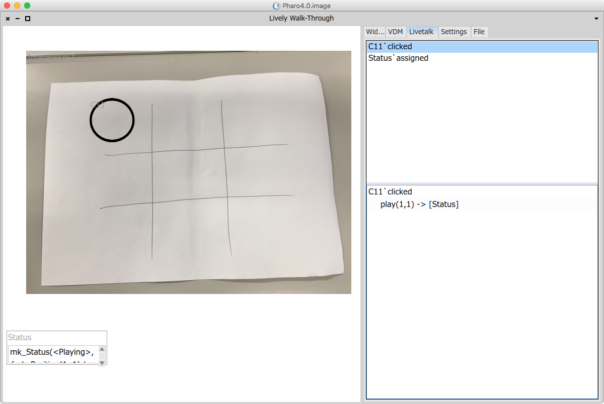
動作することを確認してください。
動作することを確認した左上の升目を複製して、3x3の升目を作ります。 C11の右クリックメニューから「duplicate」を選択してください。
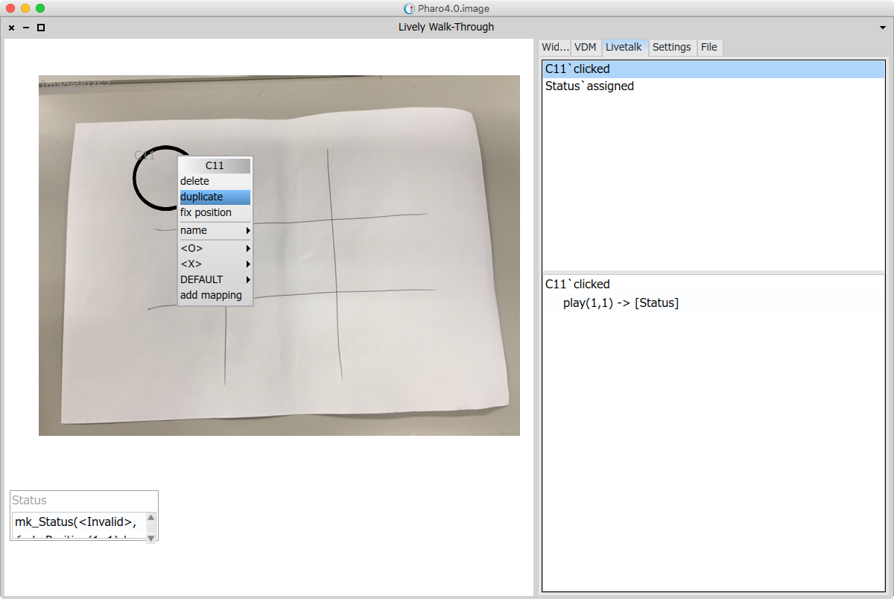
複製されたウィジェットの名前を指定します。 「C12」と入力してください。

「C12」ウィジェットが複製されました。
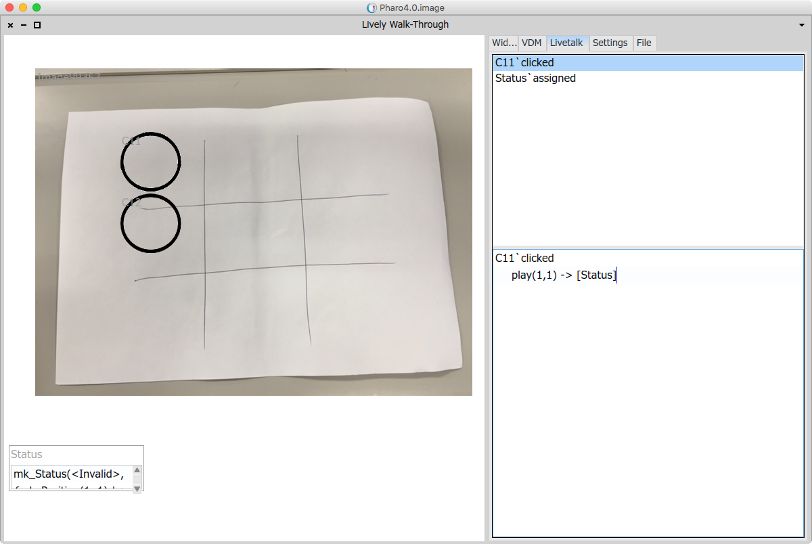
「C12」ウィジェットをドラッグして上段中央の升目に入れてください。

これを繰り返して、全ての升目を埋めてください。
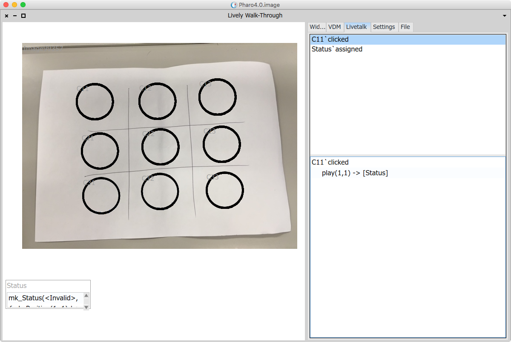
LiveTalkブラウザでC12からC33までのスクリプトを作成します。 LiveTalkブラウザ上部のリストで LiveC11`clicked を選択してください。 LiveTalkブラウザ下部に C11`clicked のスクリプトが表示されるので、以下のように編集して、右クリックメニューでAcceptしてください。
C12`clicked
play(1,2) -> [Status]

同様に、C13`clicked から C33`clicked まで定義してください。
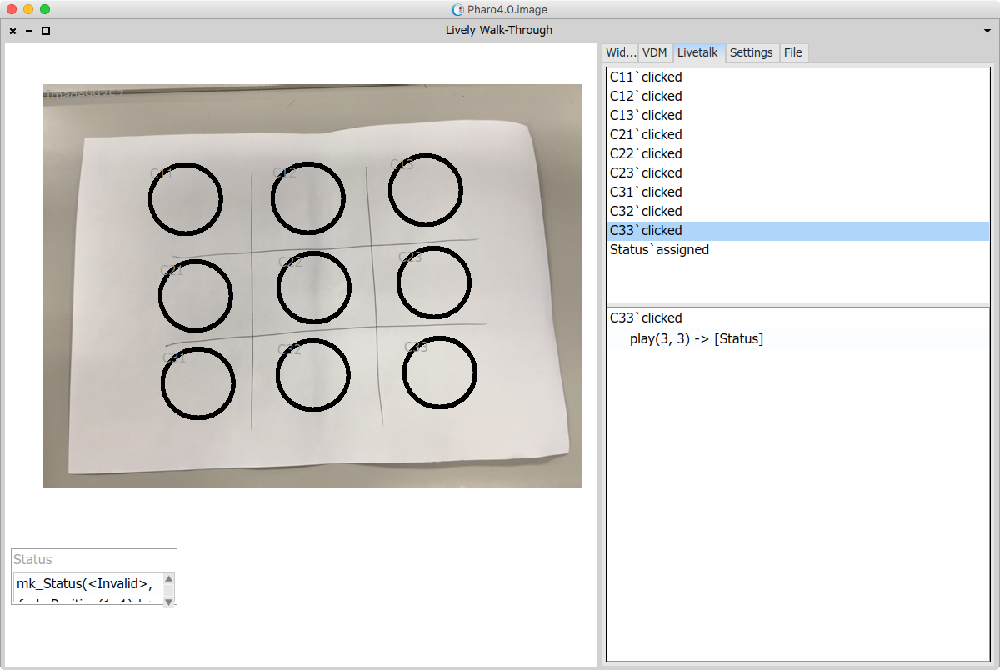
Status`assigned スクリプトを以下のように修正してください。
Status`assigned
get(1,1) -> [C11]
get(1,2) -> [C12]
get(1,3) -> [C13]
get(2,1) -> [C21]
get(2,2) -> [C22]
get(2,3) -> [C23]
get(3,1) -> [C31]
get(3,2) -> [C32]
get(3,3) -> [C33]
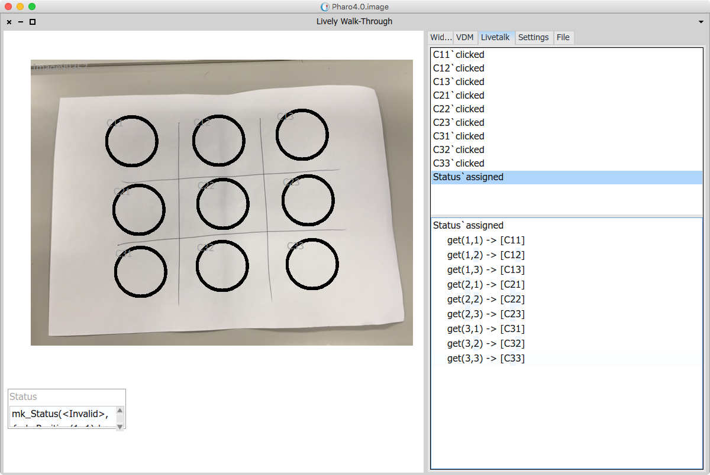
最後に、盤面を初期化して Tic Tac Toe ゲームを開始するボタンを作成します。
ウィジェットパレットからButtonウィジェットをドラッグして、盤面の画像の下に置きます。


Buttonウィジェットの名前を「Start」に設定します。 右クリックメニューの「change name」を選択してください。
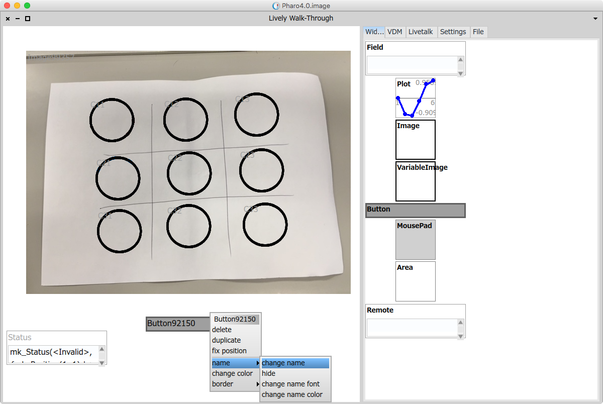
新しいウィジェット名として「Start」と入力してください。


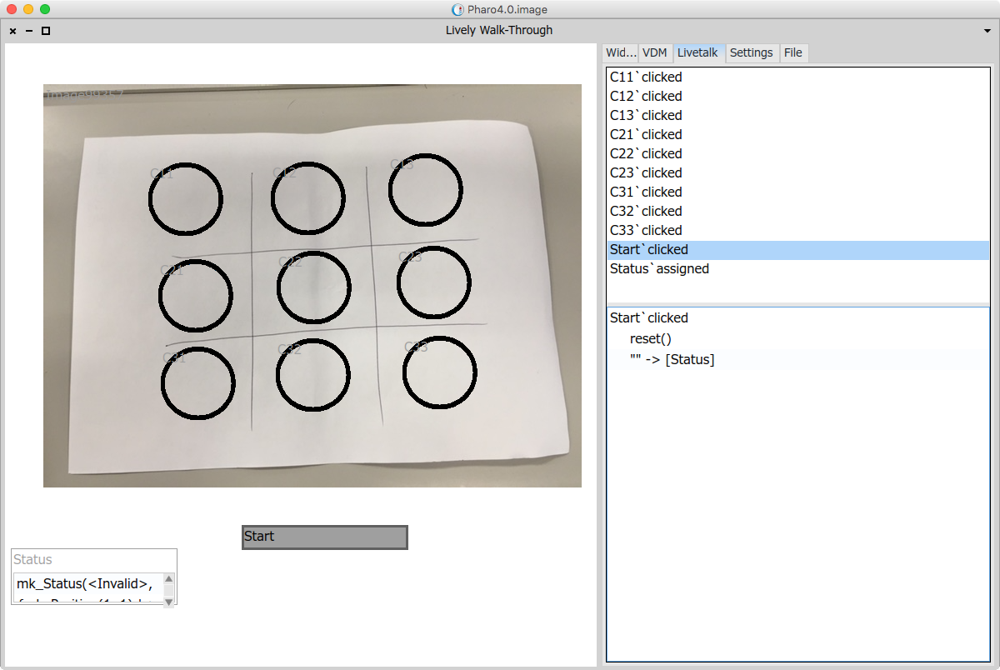
Startボタンを押した時のアクションを定義します。
「LiveTalk」タブをクリックしてLiveTalkブラウザに切り替えてください。 LiveTalkブラウザ下部に以下のスクリプトを入力して、右クリックメニューから「Accept」してください。
Start`clicked
reset()
"" -> [Status]
これでUIの配置とスクリプトの定義が完了しました。
UIの配置が決まったら、配置を固定します。
C11ウィジェットの右クリックメニューで「fix position」を選択してください。 もしまた修正したい場合には、右クリックメニューで「make movable」を選択すると、固定が解除されるので、 修正して、再度「fix position」をしてください。
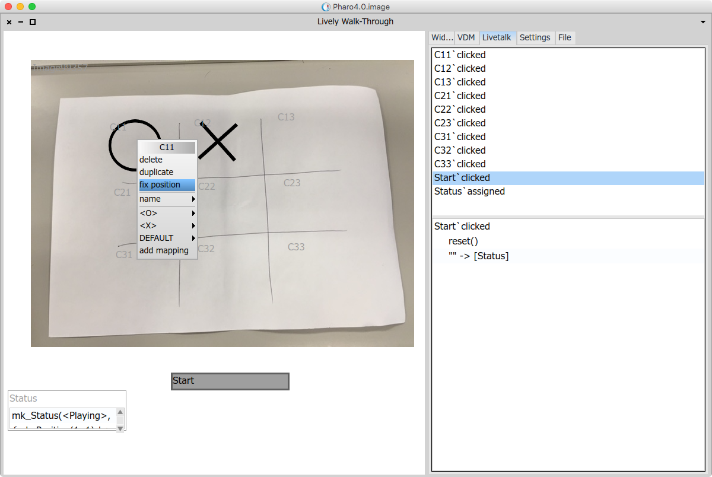
では、「Start」ボタンを押して、Tic Tac Toeで遊んでみましょう。
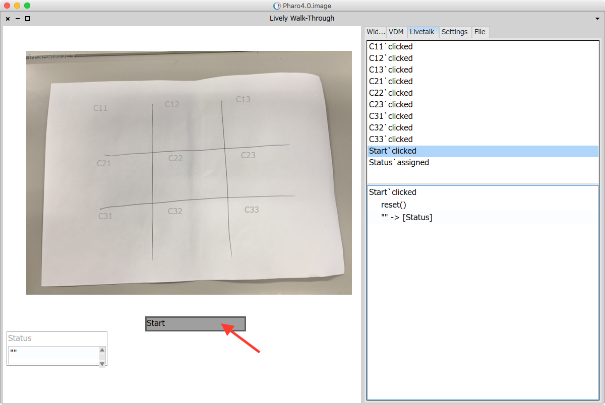


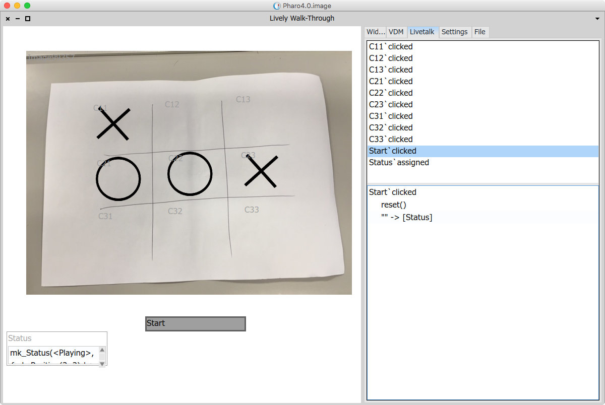
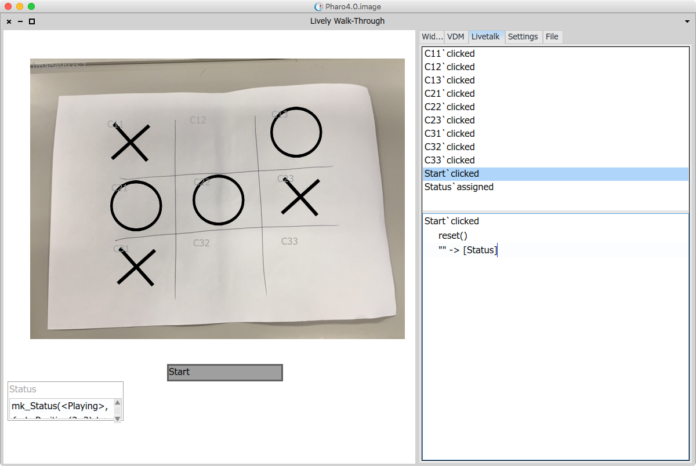

引き分けました。Startボタンを押してリセットしてください。
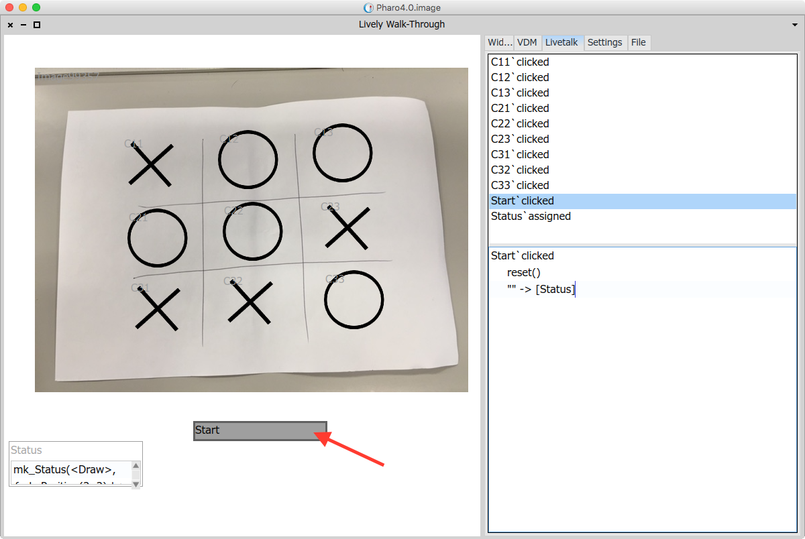
盤面が初期化されました。 一通り遊ぶことができる UIプロトタイプ が完成しました。

UIプロトタイプが完成したことで、
が確認できました。
作成した UIプロトタイプをファイルに保存します。
上端右側の「File」タブをクリックして「Save as...」ボタンを押してください。
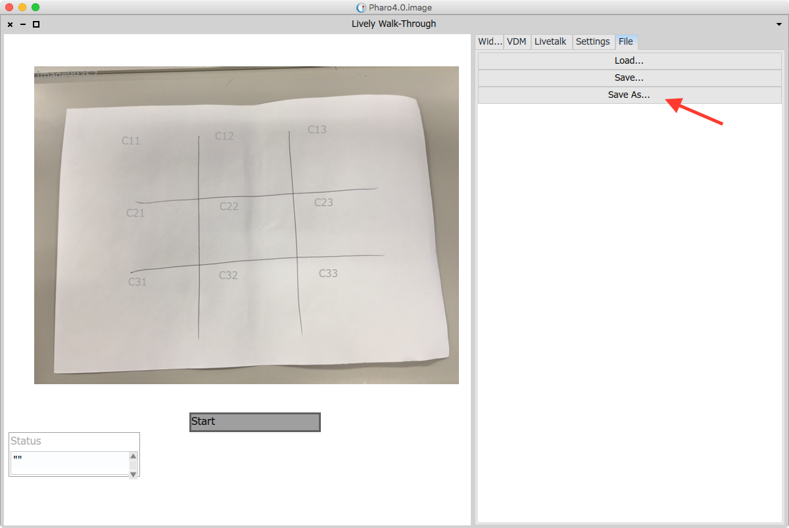
ファイルダイアログが開くので、保存先のファイルを指定してください。

これでファイルに保存することができました。 開く時には、同じく「File」タブの「Load...」ボタンで、同じファイルを指定してください。
このチュートリアルでは、あらかじめ用意されたVDM-SL仕様と盤面や石のUIデザインの素材を使って、コンピュータを相手に遊ぶ Tic Tac Toe ゲームの UI を構築し、VDM-SL仕様とUIを連携させることでプロトタイプを作成し、VDM-SL仕様についてUIデザイン上の妥当性と、UIデザインの機能上の妥当性を確認しました。
実際にシステムを開発する場合には、VDM-SL仕様の記述やUIデザインをそれぞれの専門の作業者が行う場合が多く、それぞれが前提としていることが食い違っていることもあります。Lively Walk-Through上で実際に動作する UIプロトタイプを作成し実際に使ってみることで、VDM-SL仕様とUIデザインが整合していることを確認し、それぞれVDM-SL仕様からプログラムの実装をする作業とUIデザインを完成させていきます。 さらに洗練された VDM-SL仕様 と UIデザイン を得るために、VDM-SL技術者と UIデザイナがこのUIプロトタイプ上で議論して、問題点、課題、改善できる点、設計として合意した点をまとめて、お互いに持ち帰ります。